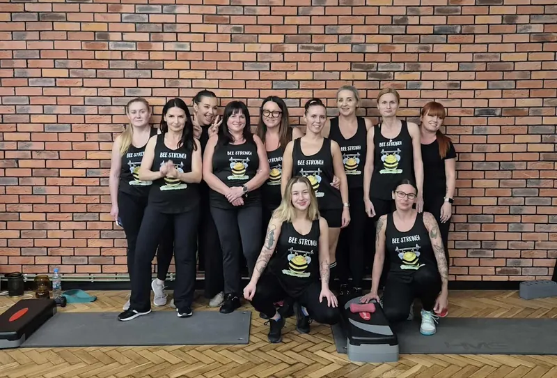
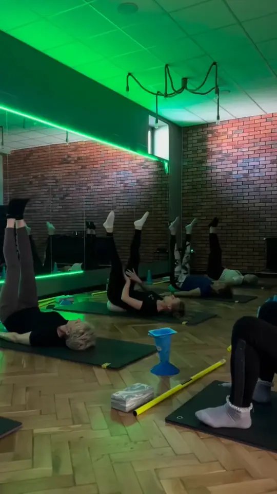
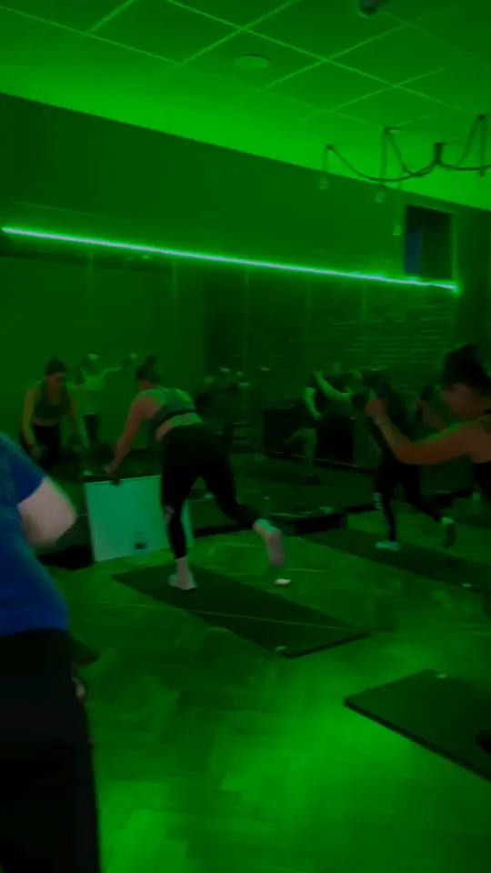
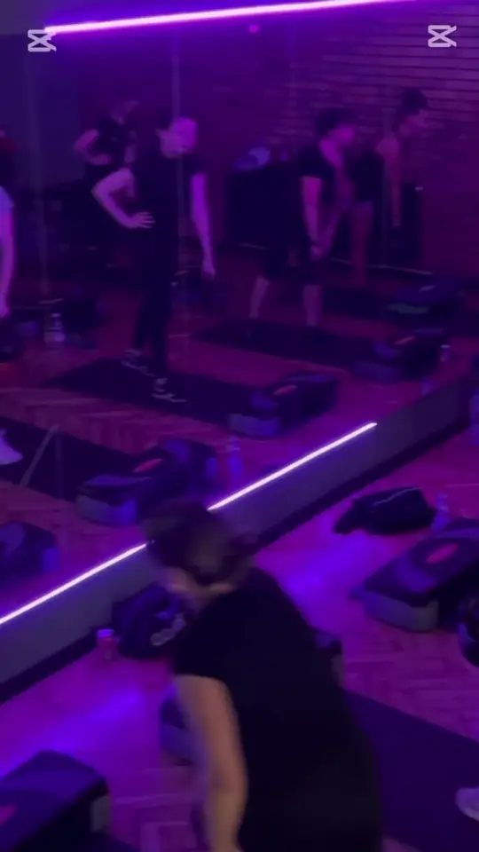
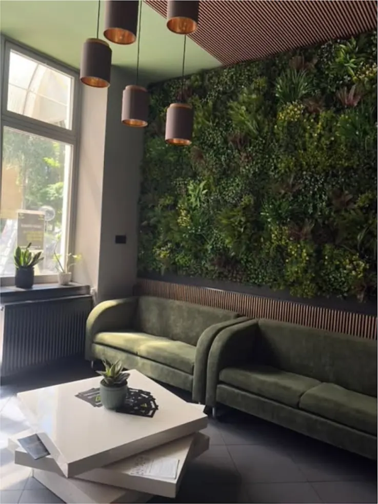

Pilates
Wolne, dokładne ćwiczenia na macie, które wzmacniają mięśnie brzucha, pleców i pośladków. Dobre przy siedzącej pracy i na start po przerwie.
Prowadzi: Zuza
Zajęcia grupowe w sali fitness V3 Klub: od spokojnego pilatesu i jogi, przez zumbę i step, po aeroboxing. Osobno zajęcia na zdrowy kręgosłup i gimnastyka korekcyjna prowadzone przez rehabilitanta.

Każde zajęcia mają inny cel. Poniżej krótko, czego się spodziewać i dla kogo są.
Wolne, dokładne ćwiczenia na macie, które wzmacniają mięśnie brzucha, pleców i pośladków. Dobre przy siedzącej pracy i na start po przerwie.
Prowadzi: Zuza
Pozycje rozciągające i wzmacniające połączone z oddechem. Poprawia zakres ruchu i pomaga się wyciszyć po pracy.
do uzupełnienia: prowadząca / prowadzący
Trening taneczny do muzyki latynoskiej i popularnej. Dużo ruchu, proste kroki, nie trzeba umieć tańczyć.
do uzupełnienia: prowadząca / prowadzący
Choreografia na stopniu w rytm muzyki. Trening kondycyjny, który mocno pracuje nogami i pośladkami.
do uzupełnienia: prowadząca / prowadzący
Ciosy i kopnięcia z kickboxingu w formie treningu do muzyki, bez kontaktu z partnerem. Dla osób, które chcą spróbować sportów walki bez walki.
Prowadzi: Julia, instruktorka taekwondo i zawodniczka kickboxingu
Zajęcia Akademii Zdrowia V3 Klub. Ćwiczenia wzmacniające mięśnie posturalne i korygujące wady postawy.
Prowadzi: Jacek, absolwent wychowania fizycznego i rehabilitacji, rehabilitant
Krótkie, intensywne interwały: 20 sekund pracy, 10 sekund przerwy. Mocny zastrzyk energii w krótkim czasie.
do uzupełnienia: prowadząca / prowadzący
Zajęcia nastawione na budowanie i wzmacnianie pośladków. Ćwiczenia na macie i stepie.
do uzupełnienia: prowadząca / prowadzący
do uzupełnienia: grafik zajęć fitness (dzień, godzina, zajęcia, prowadząca)
Do czasu publikacji grafiku godziny zajęć fitness sprawdzisz w recepcji albo pod numerem 788 463 717.
Grafik sali sportów walki jest na stronie grafiku zajęć.



W opiniach Google o zajęciach fitness najczęściej pojawiają się dwa imiona: Zuza, która prowadzi pilates, i Wiktoria.
do uzupełnienia: krótkie profile instruktorek fitness (zdjęcie, doświadczenie, prowadzone zajęcia)
Wszyscy trenerzy V3
Świetna siłownia, a tutejsze zajęcia fitness to prawdziwy hit! Instruktorzy to profesjonaliści z ogromną pasją: Zuza i Wiktoria.
Świetna siłka i sala fitness. Gorąco polecam trenerkę Zuzię i jej pilates.
Szczególne podziękowania dla trenerki Wiktorii: jest mega zaangażowana, pomocna…
Pierwsza siłownia, na którą mam ochotę regularnie wracać. Panie na recepcji są przemiłe i pomocne, a trenerka Wiktoria jest najwspanialsza na świecie!
Fragmenty opinii z Map Google, skrócone.
Pilates, joga, zumba, step fitness, aeroboxing oraz zajęcia na zdrowy kręgosłup i gimnastyka korekcyjna.
Tak. Najłagodniejszy start to pilates, joga albo zdrowy kręgosłup. Zumba i step są bardziej dynamiczne, ale kroki są proste.
Pilates skupia się na wzmacnianiu mięśni głębokich, zwłaszcza brzucha i pleców. Joga więcej czasu poświęca rozciąganiu, równowadze i oddechowi. Obie formy dobrze się uzupełniają.
Wygodny strój sportowy, wodę i ręcznik. Na miejscu są szatnie z prysznicami.
V3 Centrum Sportowe, Poniatowskiego 24, Jarosław. Zadzwoń albo przyjdź do recepcji, pokażemy klub i dobierzemy karnet.